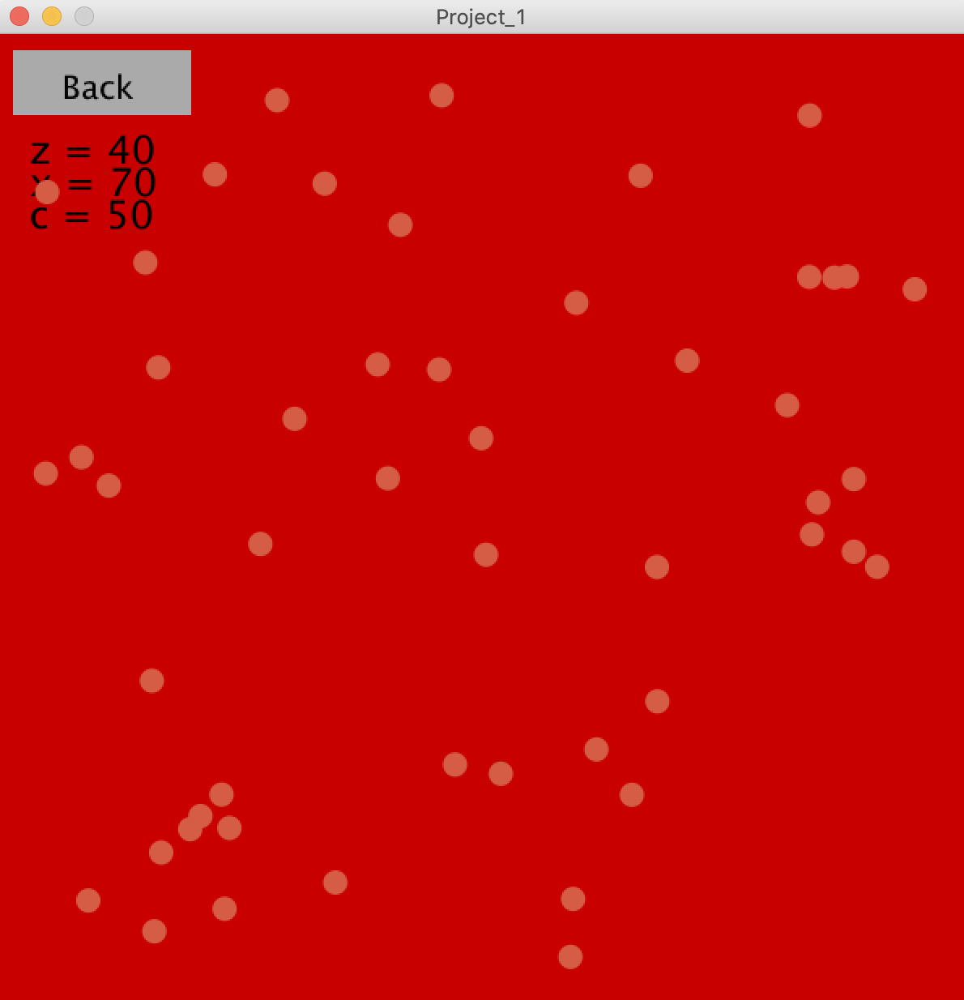

Jhonny MedranoI'm a student at City of London, I' doing Msci Cyber Security. I made a little game, it consists of bouncing balls and the user having to count them. It gets h harder each level, visibility is harder, there's more balls and velocity will increase a little bit... I am new to processing, I used to use python and was my main programming language up until Year 13. I don't really take pictures of myself that much so that one will do. |
||
|
|
||
Bootcamp 2020: Bouncing BallsMy first programming project, concluding the 2 week Programming Bootcamp at City (2020). This Processing project demonstrates a comprehensive understanding of the use of arrays, loops, and randomness. I created a little game that consists of bouncing balls and the user having to count them. It gets harder each level, visibility is harder, there's more balls and velocity will increase a little bit. The user will either have to count them or guess, they will be given 3 options per level. The balls are in 3 arrays for the different 3 levels: Easy, Medium and Hard. They are in a class but are called whenever the user chooses one of the options. Each level has their own background. My initial goal was to get the users input and compare it to the array length so the program can validate if the answer is correct or not. However, I changed it last minute so the user can have 3 options and press a letter indicating the answer. Check out the code on Github: Github | ||
|  | ||